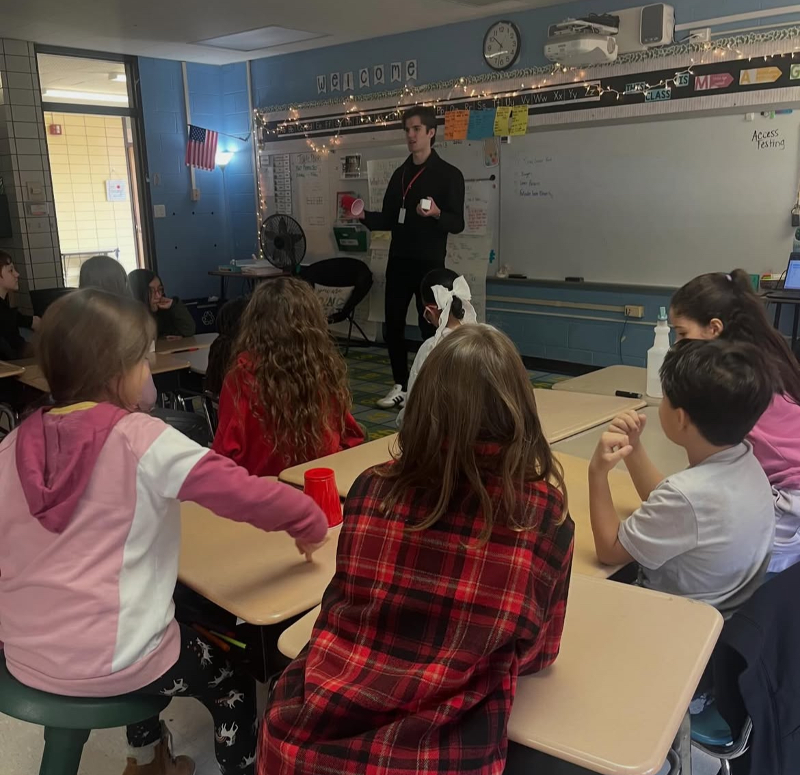
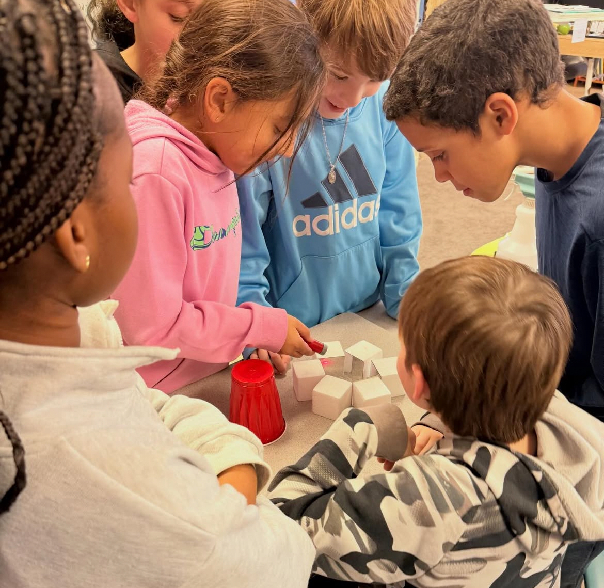
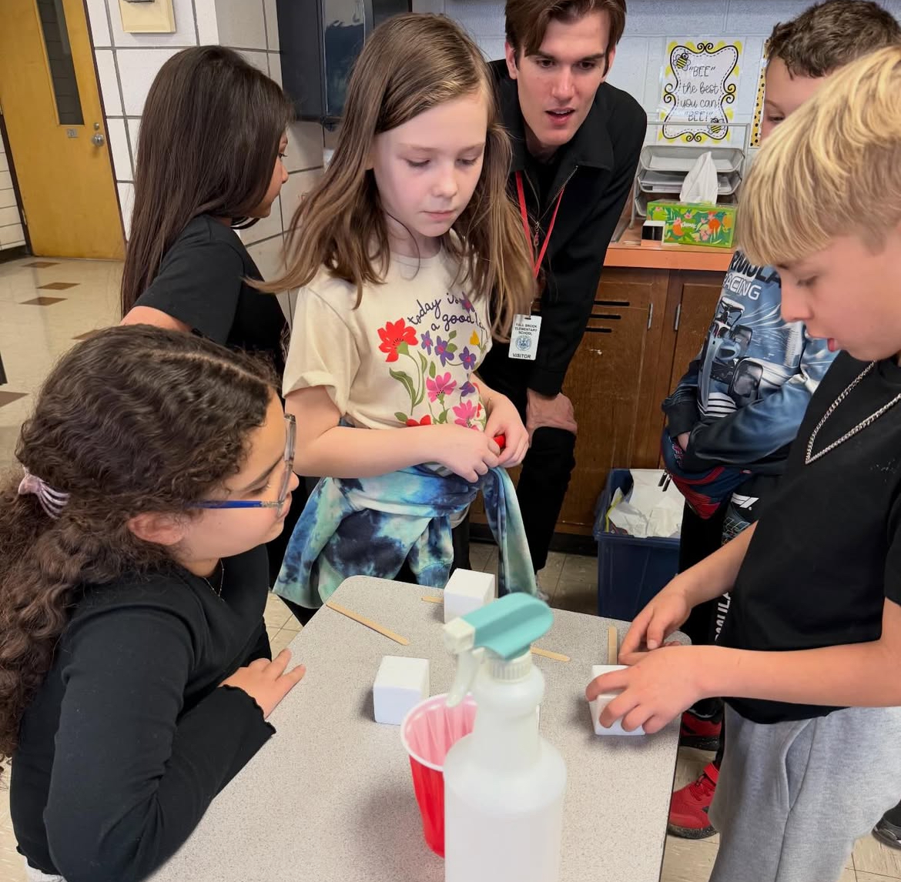
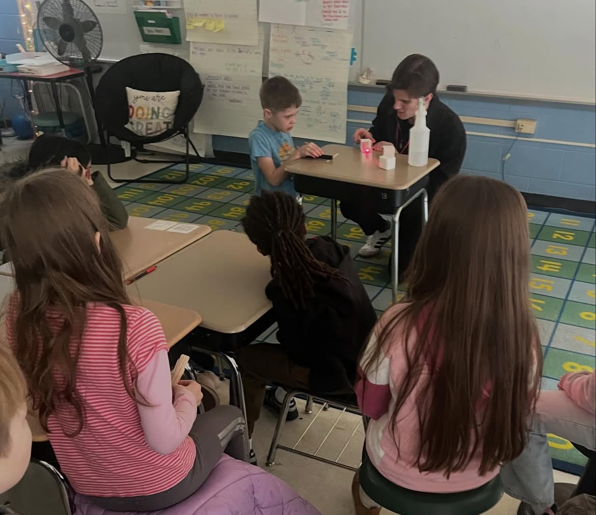
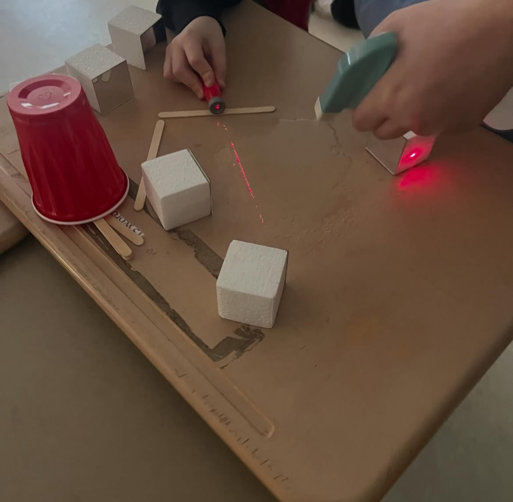
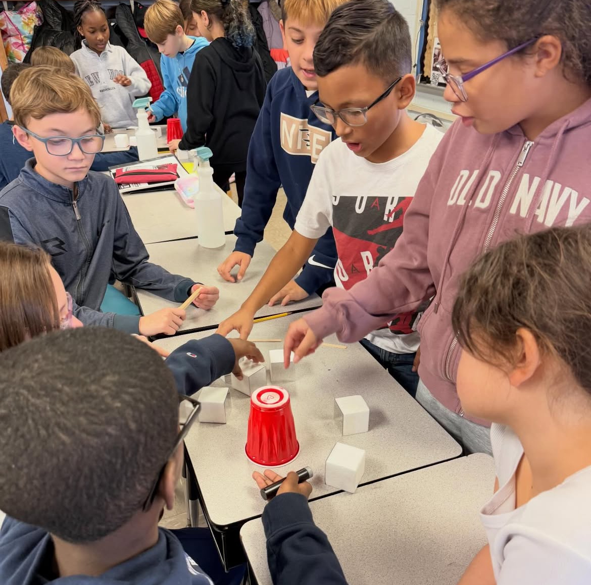
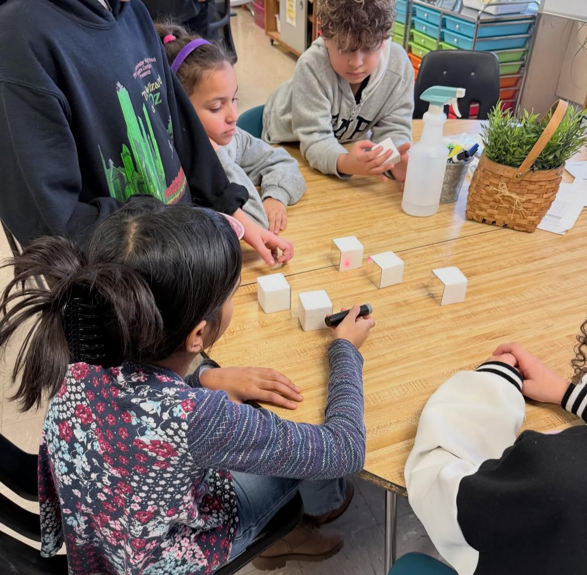
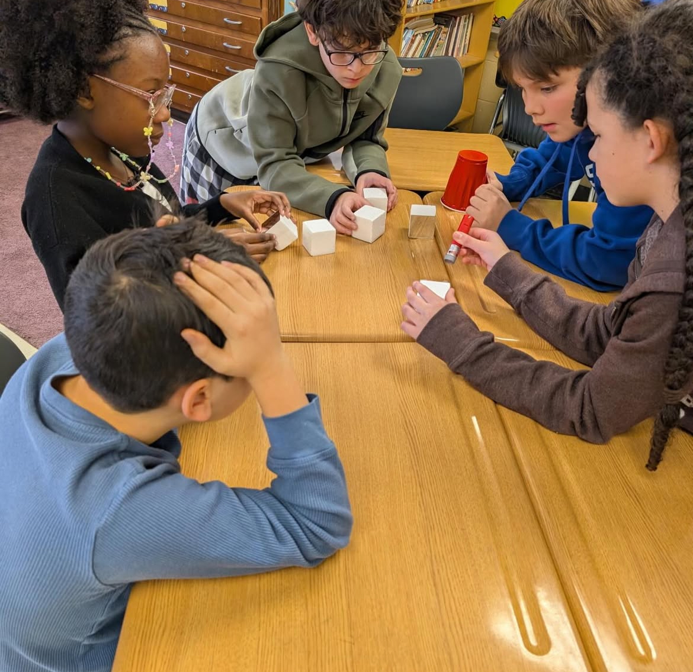

Making Science Accessible
Growing up in a low income community in Massachusetts inspired my commitment to making science accessible.
I founded the Amherst Quantum Initiative, which brings together students across UMass Amherst and Amherst College to explore quantum sensing, communication, and computation.
We also run K to 12 outreach across the Pioneer Valley through school and classroom visits, paired with hands on labs for elementary and middle school students.
If you're interested in collaborating on STEM outreach initiatives, please reach out!







